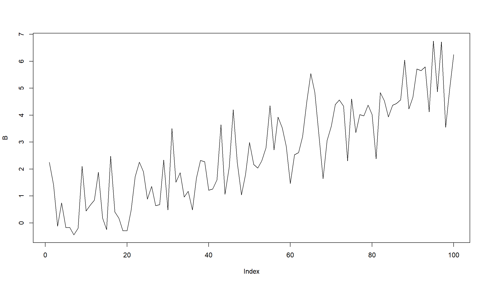

Основные особенности финансовых серий и построение AR-моделей
“Количественные финансы”
Салихов Марсель (marcel.salikhov@gmail.com)
2020-12-07
Цели лекции
- разобраться в чем основные особенности финансовых серий
- почему стационарность это важно?
- понять, что такое автокорреляция (serial correlation)
- понять базовые принципы построения моделей временных рядов
- понять устройство модели случайного блуждания (random walk)
- понять основные принципы авторегрессионных (AR) моделей
- изучить идентификацию параметров моделей с помощью коррелограмм (ACF)
- научиться строить AR-модели в R
Пример финансовой серии – индекс S&P 500
[1] "^GSPC"
построим график логарифма серии и разницы в логарифмах (лог-доходность)
Основные особенности финансовых серий:
- Многие финансовые серии растут экспоненциально и имеют изменяющуюся волатильность в зависимости от уровня значений.
- Наблюдения, которые находятся рядом, скоррелированны между собой.
- Доходности имеют избыточный эксцесс (heavy tails) и не распределены нормально.
- Волатильность устойчива во времени (persistent) и часто в финансовых данных наблюдаются кластеры волатильности - периоды большой и низкий волатильности сохраняются определенное время.
Что такое модель?
- Когда мы работаем с финансовыми данными, обычно мы хотим научиться либо прогнозировать, либо симулировать их (к примеру, для риск-менеджмента). Для того, чтобы строить прогнозы или симуляции, необходимо иметь модель серии.
- Модель – это упрощенное представление о реальности. Мы хотим, чтобы модели наши модели инкорпорировали особенности серий, которые наблюдаются эмпирически.
Автокорреляция
- Часто в финансовых сериях последовательные точки наблюдений влияют друг на друга в определенной степени – имеют корреляцию. С точки зрения количественного анализа задача состоит в том, чтобы идентифицировать и структурировать эти корреляции.
- Содержательно эту зависимость можно представить как распространение информации. Инвесторам требует какое-то времени, чтобы оценить и интерпретировать поступающую информацию. По этим причинам доходности в момент времени \(t\) могут быть связаны с доходностью в момент времени \(t-1\). Таким образом, в серии сохраняется определенная “память”.
- Адекватное моделирование этой корреляции может существенно улучшить возможности прогнозирования и для более сложных моделей.
- Если последовательные наблюдения во временном ряде скоррелированы между собой, то мы говорим, что в ряде есть серийная корреляция (или автокорреляция)
Автокорреляция - определение
Автокорреляция с лагом \(k\) или \(\rho_k\) определяется автоковариацией, нормализованной на дисперсию ряда:
\[\rho_k = \frac{C_k}{\sigma^2} \] Автоковариация временного ряда с лагом \(k\) определяется как
\[C_k = E[(x_t - \mu)(x_{t+k}-\mu)] \] где \(\mu\) – это ожидаемое значение (среднее) временного ряда. Ковариация определяет степень линейной зависимости между переменными, то есть ковариация говорит, на сколько переменные изменяются вместе. Корреляция может не учесть нелинейную зависимость, которая есть в серии.
На практике мы не знаем истинных значений этих параметров (среднего, дисперсии, ковариации) и вынуждены оценивать выборочные значения – по имеющейся выборке.
Коррелограмма
- Коррелограмма – это график, на котором отражены значения выборочной автокорреляции с последовательными лагами. Этот график позволяет удобно увидеть структуру автокорреляции на каждом лаге.
- Основное использование коррелограммы – визуально находить автокорреляцию. Потом мы будем “убирать” ее с помощью оцененной (fitted) модели.
- Коррелограмма остатков модели позволяется оценивать “остаточную” автокорреляцию и понять, необходимы ли дальнейшие доработки модели.
- В R коррелограмма строится с помощью функции
acf (или forecast::Acf). В большинстве статистических программ также реализован этот функционал.
Коррелограмма последовательно нормально распределенных случайных величин
set.seed(123)
w <- rnorm(100) ## 100 нормально распределенных величин со средним = 1 и дисперсией = 1
acf(w)
- На лаге 0 коррелограмма всегда имеет значение 1 (корреляция наблюдений с самими собой)
- Прерывистые синие линии означают границы на которых мы имеем свидетельства против нулевой гипотезы, что корреляция на этом лаге равна нулю (на 5% уровне).То есть граница позволяет нам оценивать “статистически значимое” отличие корреляции от 0. На практике мы смотрим на те лаги, которые пересекают прерывистые линии (однако надо иметь в виду, что 5% этих лагов должны пересекать границы в любом случае!)
- Коррелограмма также позволяет оценивать сезонные эффекты (к примеру, автокорреляция с лагом 12 для месячных данных)
Коррелограмма для линейного тренда
w <- seq(1, 100)
layout(1:2) # расположить графики друг на другом
plot(w, type="l")
acf(w)

- АСF снижается линейным образом по мере увеличения лагов
- Коррелограмма такого вида указывает на наличие линейного тренда в серии
Коррелограмма для повторяющейся последовательности
w <- rep(1:10, 10)
layout(1:2)
plot(w, type="l")
acf(w)
- ACF имеет пики на значениях 10 и 20 (наш исходный ряд имеет цикл = 10)
- На значениях лагов 5 и 15 отрицательная корреляция равная -0,5
- Коррелограмма подобного вида указывает на наличие сезонной (периодической) компоненты в серии
PACF – частичная корелограмма
- PACF – частичная (частная) автокорреляция (partial autocorrelation)
- ACF характеризует последовательную зависимость случайной своей величины от своих лагированных значений.
- Частичная автокорреляция похожа на обычную автокорреляцию, однако дополнительно удаляет линейную зависимость на лагах, предшествующих рассматриваемому.
- Частичная автокорреляция на лаге \(t\) это коэффициент линейной регрессии при \(x_t\), а регрессии включены все предыдущие лаги - \(x_1, x_2, ..., x_{t-1}\).
PACF для линейного тренда.
w <- seq(1, 100)
layout(1:2) # расположить графики друг на другом
plot(w, type="l")
pacf(w)
w <- seq(1, 100)
layout(1:2) # расположить графики друг на другом
plot(w, type="l")
acf(w)
ACF/PACF для доходностей индекса S&P 500
Понятие стационарности и почему оно важно
- Стандартным допущением при анализе временных рядов является стационарность. Методы временных рядов как правило нельзя использовать, если это условие не соблюдается!
- Серия является стационарной, если параметры генерирующего процесса (обычно это среднее и дисперсия) не меняются со временем и отсутствует автокорреляция.
- Рассмотрим две серии А и B. Параметры серии А (среднее арифметическое, стандартное отклонение) - не меняются со временем
mu = 0
sigma = 1
T = 100
A <- rnorm(T, mu, sigma)
plot(A, type = 'l')
Понятие стационарности и почему оно важно (2)
Для серии B среднее (mean) меняется со временем
mu = 0
sigma = 1
T = 100
B <- rep(0, 100)
t <- seq(0,T, by = 1)
for(i in 1:T){
B[i] <- rnorm(1, 0.05*i, sigma)
}
plot(B, type = 'l')

Почему не-стационарнасть опасна?
- Многие статистические цены требуют, чтобы данные, которые тестируются, были стационарны.
К примеру, возьмем среднее для не-стационарного ряда (серия B, сгенерированная ранее):
- Рассчитанное среднее значение для всех точек бессмысленно с точки зрения прогнозирования будущих значений.
- Устойчивость параметров во времени дает основания считать, что рассчитанные по прошлым данным параметры, будут иметь значение и в будущем.
Как можно проверить стационарность серии?
- Глазами – всегда полезно смотреть график данных.
- Оценивать среднее и дисперсию скользящим окном
- Формальные тесты на стационарность
Проверим стационарность с помощью стандартного теста Augmented Dickey-Fuller.
library(tseries)
adf.test(A)
Warning in adf.test(A): p-value smaller than printed p-value
Augmented Dickey-Fuller Test
data: A
Dickey-Fuller = -4.713, Lag order = 4, p-value = 0.01
alternative hypothesis: stationary
Warning in adf.test(B): p-value smaller than printed p-value
Augmented Dickey-Fuller Test
data: B
Dickey-Fuller = -6.2089, Lag order = 4, p-value = 0.01
alternative hypothesis: stationary
Если серия нестационарна \(x_t\), можно посчитать ее разность ( \(z_t = x_t - x_{t-1}\)) и проверить ее на стационарность.
Белый шум
- Базовый подход к построению модели временного ряда – это получение в результате оценки модели остатков, в которых отсутствует автокорреляция.
- Если \(y_t\) – наблюдаемое значение в момент времени \(t\), а \(\hat{y_t}\) – предсказанное моделью значение, то остаток (residual)
\[x_t = y_t - \hat{y_t} \]
Рассмотрим временной ряд вида \({w_t: t=1,\ldots,n}\). Если элементы ряда \(w_t\) являются независимыми одинаково распределенными (i.i.d.) величинами:
- со средним (mean) равным 0
- дисперсией (variation), равной \(\sigma^2 = const\) 3.отсутствием автокорреляции (\(Cor(w_i, w_j) \neq 0, \forall i \neq j\))
Тогда серия \(w_t\) представляет собой белый шум (white noise).
Пример гауссовского белого шума:

Белый шум невозможно прогнозировать. Поэтому если остатки в модели – белый шум, вы добились успеха.
\[x_t = signal + noise \] Белый шум всегда стационарен! Но не каждый стационарный ряд является белым шумом.
Модель случайного блуждания (random walk)
- Модель
random walk – это модель временного ряда, в которой текущее значение равно предыдущему значению плюс случайная компонента (белый шум).
\[ x_t = x_{t-1} + w_t \]
- Случайное блуждание – это просто сумма отдельных белых шумов.
\[ x_t = x_{t-2} + w_{t-2} + w_t = x_0 + \sum_{i=0}^{t-1}{w_{t-i}}\] \[E(x_t) = x_0 + E(\sum_{i=0}^{t-1}{w_{t-i})})= x_0 \] \[Var(x_t) = \sum_{i=0}^{t-1}Var(w_{t-1} = t \sigma^2=f(t)) \] Поэтому random walk не является стационарным!
set.seed(123)
x <- w <- rnorm(1000)
for (t in 2:1000) x[t] <- x[t-1] + w[t]
layout(1:2)
plot(x, type="l")
acf(x)
Модель random walk для финансовых данных
getSymbols('^GSPC', src='yahoo')
[1] "^GSPC"
acf(diff((Cl(GSPC))), na.action = na.omit, main = 'Автокорреляция лог-доходностей индекса S&P 500')
- Можем ли мы заключить, что модель случайного блуждания адекватно оценивает доходности индекса S&P 500?
АR (авторегрессионная) модель
- Авторегрессионная модель, или \(AR(p)\) модель, создается путем регрессирования временного ряда на собственные предыдущие значения (лаги).
- Простейшей формой является AR(1), в которой используется только один предыдущий лаг.
- AR(1) модель для серии \(x_t\) имеет следующий вид:
\[x_t = b_0 + b_1 x_{t - 1} + \epsilon_t\]
- Модель AR(p) имеет следующий вид:
\[x_t = b_0 + b_1 x_{t-1} + b_2 x_{t - 2} \ldots + b_p x_{t - p} + \epsilon_t\]
Допущения для моделей AR
Для правильного функционирования AR-моделей исходные временные ряды должны быть стационарными. На практике это означает выполнение трех условий:
- Ожидаемое значение временного ряда является постоянным и конечным, то есть \(E[y_t] = \mu\) и \(\mu < \infty\) для всех значений \(t\)
- Дисперсия временного ряда является постоянной и конечной для всех периодов
- Ковариация временного ряда с самим собой для любого фиксированного количества периодов является постоянной и конечной.
\[cov(y_t, y_{t - s}) = \lambda, |\lambda| < \infty, \lambda = {constant}, \\ t = 1, 2, \ldots, T; s = 0, \pm 1, \pm 2, \ldots, \pm T \]
- Если эти условия не выполняются, тогда результаты оценки модели не будут иметь практического смысла (оценки параметров будут смещенными, и любые тесты для модели не будут достоверными!)
Обоснование AR-модели
Вспомним, что модель случайного блуждания (random walk) имеет следующий вид:
\[x_t = x_{t-1} + w_t \] то есть, каждый элемент \(x_t\) зависит только от своего предыдущего значения \(x_{t-1}\) и случайной компоненты белого шума (white noise)
- Авторегрессионная модель – это просто расширение модели случайного блуждания, которая включает несколько лаговых компонент и коэффициент при предыдущем лаге не обязательной равен 1.
- Модель является линейной, так как объясняемое значение линейным образом зависит от своих предыдущих значений
- Модель AR – это регрессионная модель, в которой прошлые значения используют как предикторы.
- AR-компонента в финансовых данных указывает нам на то, что серия имеет трендовое (trending) или возвращающееся к среднему (mean reversion) поведение.
Симуляция AR(1)
Сгенерируем самостоятельно AR-процесс со значением \(b_1\) = 0.7
set.seed(123)
ar1 <- w <- rnorm(100) # создадим белый шум
for (t in 2:100) ar1[t] <- 0.7*ar1[t-1] + w[t]

- попробуем оценить модель, с тем чтобы “восстановить” исходные параметры
- В R для оценки AR-моделей можно использовать функцию
ar.
ar1_est <- ar(ar1, method = "mle", se.fit=TRUE)
ar1_est$order
[1] 1
[1] 0.6558341
ar1_est$ar + c(-1.96, 1.96)*sqrt(ar1_est$asy.var) ## доверительный интервал для параметра
Warning in c(-1.96, 1.96) * sqrt(ar1_est$asy.var): Recycling array of length 1 in vector-array arithmetic is deprecated.
Use c() or as.vector() instead.
[1] 0.5086898 0.8029784
Симуляция AR(1) c отрицательным параметром
попробуем параметр \(b_1\) = -0.6
set.seed(123)
ar1 <- w <- rnorm(100) # создадим белый шум
for (t in 2:100) ar1[t] <- -0.6*ar1[t-1] + w[t]
plot(ar1, type="l")
АR(2)
Рассмотрим теперь AR(2) модель, в которой используется два лага для моделирования текущего значения:
set.seed(123)
ar3 <- ar2 <- w <- rnorm(1000)
for (t in 3:1000) ar2[t] <- 0.66*ar3[t-1] - 0.333*ar3[t-2] + w[t]
layout(1:3)
plot(ar2, type="l")
acf(ar2)
pacf(ar2)
попробуем оценить параметры c помощью функции ar
ar2_est <- ar(ar2, method = "mle")
ar2_est
Call:
ar(x = ar2, method = "mle")
Coefficients:
1 2 3 4 5 6 7 8
0.5483 -0.6478 0.5029 -0.4661 0.3779 -0.3215 0.2718 -0.2158
9 10 11 12
0.1958 -0.1044 0.0685 -0.0885
Order selected 12 sigma^2 estimated as 1.052
Оценка - использование AR-модели для цен на нефть
Пример – цены на нефть
library(quantmod)
getSymbols("DCOILWTICO", src = "FRED")
[1] "DCOILWTICO"
wti <- DCOILWTICO['2000::'] ## ограничим используемую выборку
plot.xts(wti)
Использование AR-модели для цен на нефть (2)
посчитаем лог-доходности, чтобы перейти от нестационарной серии к стационарной (потенциально).
wti.rtn = diff(log(wti))
wti.rtn <- wti.rtn[complete.cases(wti.rtn),]
plot(wti.rtn)
wti_ar <- ar(wti.rtn, na.action=na.omit)
wti_ar$order
[1] 12
Модель имеет 23 лага! Ограничим модель 2 лагами максимально.
wti_ar <- ar(wti.rtn, na.action=na.omit, order.max = 2)
wti_ar$order
[1] 2
[1] 0.54834553 -0.64784189 0.50292970 -0.46611963 0.37791341 -0.32148035
[7] 0.27182489 -0.21575636 0.19582157 -0.10440147 0.06845597 -0.08846380
посмотрим на остатки модели
Остатки для AR(2)-модель цен на нефть
resid <- residuals(wti_ar)
plot(resid, type="l", col=2)
Судя по АСF остатков, AR(2) не очень хорошо подходит для моделирования динамики цен на нефть!
Остатки модели
- Остатки модели - остатки между расчетными величинами и фактическими значениями.
- Исследование остатков – важный шаг для оценки качества моделей.
- Хорошая модель “оставляет” после себя остатки, которые не имеют структуры.
PACF для AR-моделей
пример AR(1) модели
пример AR(2) модели
set.seed(123)
ar2 <- w <- rnorm(1000)
for (t in 3:1000) ar2[t] <- 1.5*ar2[t-1] - 0.5*ar2[t-2] + w[t]
plot(ar2, type="l")
layout(1:2)
Acf(ar2)
Pacf(ar2)
Мы используем PACF для того, чтобы оценить возможный порядок AR-модели!
Тест Льюнга-Бокса (Ljung Box test)
Тест Льюнга-Бокса был предложен в 1978 году и основан на статистике \(Q^*\)
\[ Q^* = T(T+2)\sum_{k=}^h (T-k)^{-1}r_k^2 \]
\(T\) – длина серии \(r_k\) – величина автокорреляции на лаге \(k\) \(h\) – количество тестируемых лагов (его необходимо задавать при использовании теста)
Большие значения \(Q^*\) указывают на наличие автокорреляции в серии. Значение теста сравнивается с критическими значениями распределения хи-квадртат с \(h-K\) степенями свободы (\(K\) - количество оцениваемых параметров).
При значении p-value меньше 0,05, принимается гипотеза о наличии автокорреляции в серии.
Как можно посчитать ошибку?
Ошибка (остаток) представляет собой разницу между фактическим и предсказанными значением. То есть “ошибка” обозначает не ошибку, а часть серии, которая не была объяснена моделью.
\[e_{t} = y_{t} - \hat{y}_{t} \]
Ошибки можно посчитать для тренировочной выборки и для тестовой выборки.
Существует несколько разных вариантов, как можно сравнить фактические и модельные значения ряда.
\[ {\text{Mean absolute error}: MAE} = {mean}(|e_{t}|)\]
\[\text{Root mean squared error: RMSE} = \sqrt{\text{mean}(e_{t}^2)} \]
Процентная ошибка определяются как $ p_t = 100 _t/y_t $
\[\text{Mean absolute percentage error: MAPE} = \text{mean}(|p_{t}|) \]
Тестовая/тренировочная выборка
Тренировочная выборка (training set) – часть данных, которая используется для построения модели.
Тестовая выборка (test set) – часть данных, которая используется для оценки качества и выбора альтернативных моделей.
Валидационная выборка
Иногда используется подход с разделением общей выборки на три части - тренировочная, валидационная, тестовая.
Валидационаня выборка (validation set) – часть данных, которая используется для оптимизации параметров и выбора между альтернативными моделями. Тестовая выборка тогда служит для итоговой оценки качества итоговой модели, выбранной из нескольких альтернативных.
Выводы
- Большинство финансовых серий имеют автокорреляцию.
- Учет автокорреляции важен для построения моделей и оценки статистических эффектов.
- Для оценки порядка модели AR можно использовать график PACF. Теоретически порядок модели \(AR(p)\) имеет последний значимый лаг на уровне \(p\).
- Мы предпочитаем использовать более простые модели, которые имеют меньше параметров для того, чтобы избежать “подгонки” под данные (overfitting).
Использованные источники:
- “An Introduction to Analysis of Financial Data with R” (Ruey S. Tsay)
- “Statistics and Data Analysis for Financial Engineering” (David Ruppert & David Matteson)
- Analyzing Financial Data and Implementing Financial Models Using R (Clifford Ang)
- Forecasting Financial Time Series (Patrick Perry)
- Autoregressive Moving Average ARMA(p, q) Models for Time Series Analysis (Michael Halls-Moore)